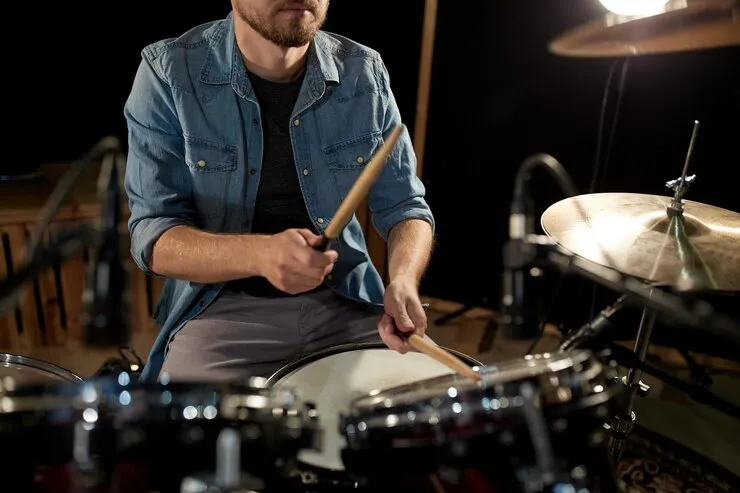
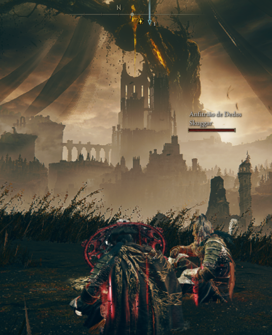
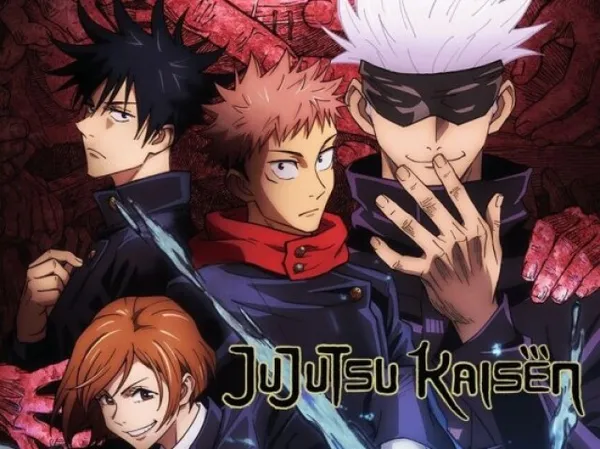

A programação é uma área que eu tenho interesse desde pequeno, com o qual descobri esse interesse ao fazer jogos na construct quando criança e percebi que era com isso que ia trabalhar.

Esse é um hobby que eu começei no ano de 2022 quando fui colocado em um cursinho de bateria na igreja. Depois de alguns meses tocando na igreja, eu fui para o instituto do batera, onde aprendi muito com o professor "Cebola" (sim, esse é o apelido dele) onde desenvolvi a maior parte das minhas habilidades na bateria e desenvolvi minhas habilidades rítmicas, chegando até a tocar na igreja e em alguns eventos para alunos do instituto do batera.
Sendo filho de mãe cantora e pai guitarrista de igreja, seria óbvio que teria contato com a música desde cedo. O que acabou estimulando a minha criatividade na área musical e fazendo com que eu desenvolvesse habilidades de composição. Embora eu não componha apenas um estilo musical, o estilo músical que eu mais faço composições é o rock. Contudo esse é um hobby que eu não consegui finalizar nenhuma música (ainda), tendo várias demos em armazenadas em meu celular e computador.

Desenhar é uma coisa que eu faço desde pequeno, com o qual começei a melhorar minhas habilidades de desenho aos 9 anos ao adquirir interesse ao desenhar no estilo anime, sendo esse o estilo que eu desenho desde essa época até hoje. Inclusive, falando sobre a área do desenho estilo anime, tenho interesse em lançar uma espécie de mangá, algo que já estou desenvolvendo o rascunho da história bem como o design dos personagens.

Sendo o hobby que motivou a escolha deste curso, os games são uma coisa que gosto desde os meus 10 anos, quando zerei o meu primeiro jogo sem ser de navegador (Sonic CD), e que só aumentou ao conseguir meu primeiro vídeogame (um PS4) com o qual meu primeiro jogo naquele console foi Little Big Planet 3. Emobra eu seja muito fã da franquia Sonic, os meus jogos favoritos são Elden Ring e Shadow of the Colossus.

Sendo um interesse que eu tenho desde os 9 anos, quando assisti Pokemon XY e Digimon Fusion, os animes são um dos hobbyes mais influentes da minha vida, sendo inclusive o que me fez melhorar minhas habilidades de desenho. Os meus animes preferidos são Hunter x Hunter, Atack on Tittan e Neon Genesis Evangelion. Já os animes que estou vendo atualmente são Frieren e Jujutsu Kaizen.

Sendo esse com certeza o hobby mais saudável dessa lista, a academia é um hobby que eu desenvolvi no ano de 2024 quando minha mãe me colocou para treinar na Blue Fit quando eu tinha 16 anos, o qual acabou se desenvolvendo mais ainda ao acompanhar os vídeos do influenciador de melhoria pessoal Nathan MBC, sendo esse junto da alimentação controlada, o motivo que me fez perder 30kg de peso desde 2025. Sendo o meu objetivo de entrar no shape até o final desse ano. (Será que veremos um Daniel bombadão? I don't know, you'll tell me.)